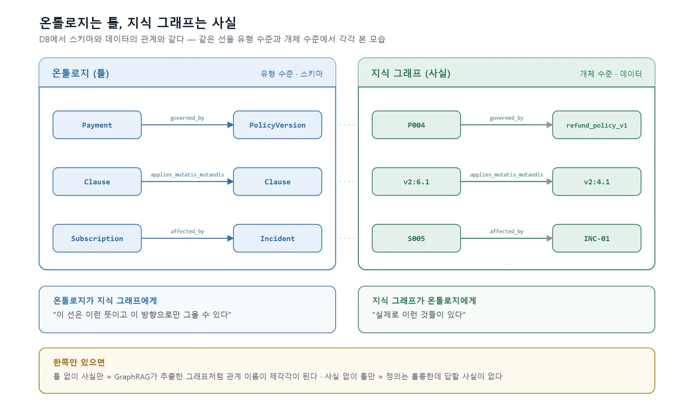

[참고] 개념·설계 설명 — 예제는 ontology-tutorial 저장소의 노트클라우드 데이터 기준
네 가지 이름이 한꺼번에 등장하는 이유
"RAG가 틀린다"는 문제를 검색하면 GraphRAG, 지식 그래프, 온톨로지라는 말이 한 문단 안에서 섞여 나옵니다. 네 가지는 같은 층의 대안이 아닙니다. 하나는 답변 방식이고, 하나는 그 변형이며, 하나는 데이터이고, 하나는 그 데이터의 틀입니다. 이 절은 각각이 무엇을 잘하고 무엇을 구조적으로 못하는지를 노트클라우드 질문으로 확인한 뒤, 네 기술을 한 표에 놓습니다.
RAG가 잘하는 것과 구조적으로 못하는 것
검색 증강 생성(Retrieval-Augmented Generation, RAG)은 질문과 비슷한 문서 조각을 찾아 LLM에 함께 넣어 주는 방식입니다. 잘하는 것은 분명합니다. "연간 구독은 며칠 안에 전액 환불되나요?"(Q02)처럼 답이 한 조항 안에 문장으로 적혀 있으면, 그 조항을 찾아 읽어 주는 것으로 대부분 해결됩니다. 문서가 바뀌면 다시 임베딩하면 되고, 새 문서를 넣는 데 설계가 필요 없습니다. 01-3의 질문 30개 중 오류 유형이 "-"인 기준선 질문(Q01, Q05, Q07)은 기본 RAG로도 맞아야 하는 질문들입니다.
구조적으로 못하는 것은 세 가지로 좁혀집니다. 여기서 "구조적"이라는 말은 검색 품질을 아무리 올려도 해결되지 않는다는 뜻입니다.
첫째, 조건 판단입니다. RAG는 조항을 찾아 주지만 조항을 적용하지는 않습니다. Q14에서 C004의 결제일이 2025-06-20이라는 사실과 "결제 완료일이 6월 30일 이전이면 1판"이라는 조항과 "변경된 규정이 유리하면 변경된 규정"이라는 약관 9조 3항을 모두 찾아 주더라도, 두 판으로 각각 계산해 비교하는 것은 LLM의 몫이 되고, LLM은 그 계산을 매번 다르게 합니다. 조건과 예외가 두 겹 이상 겹치면 정답률이 떨어지는 것이 01-4 채점의 전형적인 모습입니다.
둘째, 시점입니다. 벡터 검색은 "연간 구독 전액 환불 기간"에 대해 1판의 14일 조항과 2판의 30일 조항을 거의 같은 점수로 돌려줍니다. 두 조각은 문장이 거의 같기 때문입니다. 어느 것이 지금 유효한지, 이 고객의 결제일에는 어느 것이 유효했는지는 조각 안에 없습니다. 문서 앞머리의 valid_from·valid_to 메타데이터로 필터링하면 나아지지만, "지금 유효한 판"과 "그 고객에게 적용되는 판"과 "유리한 판"은 서로 다른 세 질문이고 필터 하나로는 셋을 구분하지 못합니다.
셋째, 정형 조회입니다. "C001에게 얼마를 환불하나요?"(Q11)의 답은 어느 문서에도 없습니다. 결제 테이블과 사용량 테이블에 있습니다. RAG는 문서를 검색하는 기술이지 테이블을 조회하는 기술이 아니므로, 이 질문은 RAG의 실패가 아니라 RAG의 범위 밖입니다. 02-3의 판단 순서에서 두 번째 단계(데이터 연결)가 이 범위를 메웁니다.
GraphRAG의 약속과 실제
GraphRAG는 문서에서 개체와 관계를 LLM으로 추출해 그래프를 만들고, 답변 시 그 그래프를 함께 이용하는 방식입니다. 마이크로소프트가 2024년에 공개한 구현이 널리 알려져 있으며, 문서 전체에서 추출한 개체를 군집(community)으로 묶고 군집별 요약을 미리 만들어 두는 것이 특징입니다. 참고 자료는 https://microsoft.github.io/graphrag/ 입니다.
약속은 명확합니다. 벡터 검색이 놓치는 "조각과 조각 사이의 연결"을 그래프가 잡아 준다는 것입니다. 노트클라우드에서는 6조 1항(학생 요금제는 베이직 규정 준용)과 4조(연간 구독 환불)가 서로 다른 조각인데, 두 조각 사이에 "준용한다"는 선이 있으면 Q09에서 4조까지 따라갈 수 있습니다. 또 "이 문서 전체의 주요 주제는 무엇인가" 같은 전체 조망 질문은 군집 요약 덕분에 벡터 검색보다 잘 답합니다.
실제로 써 보면 두 가지 문제가 따라옵니다.
하나는 추출된 그래프의 품질입니다. LLM이 문서에서 관계를 뽑을 때, "학생 요금제의 환불은 베이직 요금제의 규정을 준용합니다"에서 (학생 요금제, 관련됨, 베이직 요금제)를 뽑을 수도 있고 (학생 요금제 환불, 준용, 베이직 요금제 규정)을 뽑을 수도 있습니다. 관계 이름이 실행마다 달라지고, 방향이 뒤집히기도 하며, "결제 완료일"과 "결제일"과 "계약 성립일"이 세 개의 다른 개체로 잡혀 서로 연결되지 않기도 합니다. 그래프는 생겼지만 그 그래프가 무엇을 뜻하는지는 아무도 합의하지 않은 상태입니다. 02-1의 표현으로 말하면 지식 그래프는 있는데 온톨로지가 없는 것입니다.
다른 하나는 비용입니다. 문서 전체를 조각마다 LLM에 넣어 개체·관계를 추출하고 군집 요약을 만드는 색인 과정은 단순 임베딩보다 훨씬 많은 LLM 호출이 들며, 문서가 바뀌면 다시 해야 합니다. 노트클라우드처럼 문서 6종이면 부담이 작지만, 실제 규정집이 수백 페이지면 색인 비용이 운영 비용의 큰 부분이 됩니다. 정확한 수치는 모델과 환경에 따라 달라지므로 경향에 주목해야 하며, 8-6에서 구성별 비용을 같은 조건으로 잽니다.
이 두 문제 때문에 이 책은 "문서에서 그래프를 자동 추출"하는 GraphRAG를 기본 구성으로 쓰지 않습니다. 대신 4장에서 개념과 관계를 먼저 정의하고(온톨로지), 그 정의에 맞춰 조항과 개체를 연결하며(지식 그래프), 그중 그래프 탐색이 실제로 필요한 질문에만 09-3에서 그래프 조회를 붙입니다. GraphRAG의 약속인 "조각 사이의 연결"은 받아들이되, 연결의 뜻을 LLM의 추출에 맡기지 않고 사람이 정한다는 점이 다릅니다.
지식 그래프와 온톨로지: 데이터와 스키마
02-1의 마지막 표에서 지식 그래프와 온톨로지를 다른 줄에 놓았습니다. 둘의 관계는 DB에서 데이터와 스키마의 관계와 같습니다.

왼쪽은 "결제는 규정 판에 적용된다"는 유형 수준의 선언이고, 오른쪽은 "P004는 1판에 적용된다"는 개체 수준의 사실입니다. 왼쪽 없이 오른쪽만 있으면 GraphRAG가 추출한 그래프처럼 관계 이름이 제각각이 되고, 오른쪽 없이 왼쪽만 있으면 정의는 훌륭한데 답할 사실이 없는 상태가 됩니다. 온톨로지는 지식 그래프에 "이 선은 이런 뜻이고 이 방향으로만 그을 수 있다"고 말해 주며, 지식 그래프는 온톨로지에 "실제로 이런 것들이 있다"고 채워 줍니다.
저장 방식은 별개의 문제입니다. 지식 그래프라는 말이 그래프 DB를 전제하는 것처럼 들리지만, 오른쪽의 사실들은 PostgreSQL의 관계 테이블 세 개로도 충분히 저장됩니다. 그래프 DB가 유리해지는 것은 "P004에서 출발해 규정 판, 조항, 그 조항을 인용하는 FAQ까지" 같은 다단계 탐색이 잦을 때이고, 그 경계는 9장에서 다룹니다.
네 가지 기술의 역할 분담표
| 기술 | 층 | 하는 일 | 노트클라우드에서 맡는 질문 | 못 하는 것 |
|---|---|---|---|---|
| RAG | 답변 방식 | 질문과 비슷한 문서 조각을 찾아 LLM에 전달 | Q01, Q02, Q05, Q07처럼 한 조항이 답인 질문 | 조건 적용, 시점 구분, 테이블 조회 |
| GraphRAG | 답변 방식(RAG의 변형) | 문서에서 추출한 그래프와 군집 요약으로 조각을 연결 | 조각 간 연결이 필요한 Q09, 전체 조망 질문 | 추출 품질 보장, 정형 조회, 색인 비용 절감 |
| 지식 그래프 | 데이터 | 개체와 관계를 사실로 저장 | "P004는 1판", "6조 1항은 4조 준용", "S005는 INC-01 영향" | 관계의 뜻을 정의하는 일 |
| 온톨로지 | 스키마(의미 모델) | 개념·관계·속성·제약의 정의를 합의해 기록 | "해지와 환불은 다르다", "결제일이 기준일", "없음은 미확인" | 사실을 저장하는 일, 답변을 만드는 일 |
| LLM 위키 (OpenWiki·OKF) | 지식 표현·저장 | 개념 문서를 마크다운 + frontmatter로 두고 링크로 잇는다. 에이전트가 안내판(index)에서 문서로 내려가며 읽음 | 조항 단위 문서와 출처가 필요한 질문 전반 (구성 2와 비슷한 위치) | 링크에 타입이 없어 준용·인용의 구분, 판의 유효기간 판단, 규칙 계산은 문서 밖에서 해야 함 |
최근 LLM 위키라고 불리는 접근이 한 줄 더 필요합니다. LangChain의 OpenWiki와 Google Cloud가 제안한 OKF(Open Knowledge Format, 오픈 지식 포맷)는 지식을 임베딩이 아니라 사람이 읽을 수 있는 마크다운 문서로 두고, 문서마다 종류(type)와 출처(sources)를 frontmatter에 적고, 문서 사이는 일반 링크로 잇습니다. 출처를 붙인 텍스트를 지식의 원본으로 삼는다는 철학은 이 책과 같습니다. 갈라지는 지점은 관계와 시점입니다. OKF의 링크에는 타입이 없어 "6조 1항이 4조를 준용한다"와 "FAQ가 4조를 인용한다"가 같은 링크로 보이고, 유효기간은 문서 단위의 유통기한(stale_after) 정도로만 표현됩니다. 그래서 LLM 위키는 이 책의 구성으로 보면 구성 2(조항 단위 문서 + 메타데이터 + 링크)에 가깝고, 구성 4가 더한 것(타입 있는 관계, 시점 규칙, 보류, 행동 제어)이 그 위에 얹는 층입니다. 11-5에서 이 책의 의미 모델을 OKF 번들로 내보내 그 경계를 직접 확인합니다. OpenWiki와 OKF 자체는 같은 저자의 https://wikidocs.net/book/20996 에서 다룹니다.
표에서 보듯 RAG와 온톨로지는 대체 관계가 아닙니다. RAG는 답변을 만드는 방식이고 온톨로지는 그 답변이 참조할 의미의 틀입니다. 이 책 제목의 "RAG 다음"이 대체가 아니라 다음 설계 고민을 뜻한다고 들어가며에서 밝힌 이유가 여기에 있습니다.
이 책의 다섯 가지 구성은 표의 어디에 놓이는가
8장과 9장에서 같은 저울에 올리는 다섯 구성을 위 표에 대응시키면 다음과 같습니다.
| 구성 | 사용하는 기술 | 표에서의 위치 |
|---|---|---|
| 구성 1: 기본 RAG | RAG | RAG 줄 그대로 |
| 구성 2: 검색·메타데이터 개선 RAG | RAG + 문서 메타데이터(유효기간·문서 종류) | RAG 줄, "시점 구분" 일부 보완 |
| 구성 3: SQL 조회·규칙 결합 RAG | RAG + 정형 데이터 조회 + 규칙 평가 | RAG 줄에 "정형 조회"와 "조건 적용"을 외부에서 붙임 |
| 구성 4: 명시적 의미 모델 추가 | 구성 3 + 온톨로지 + 관계 테이블(지식 그래프) | 온톨로지 줄과 지식 그래프 줄을 PostgreSQL에 구현 |
| 구성 5: 일부 그래프 탐색 | 구성 4 + 재귀 CTE 또는 Apache AGE | 지식 그래프 줄에 다단계 탐색 추가 |
GraphRAG 줄에 정확히 대응하는 구성은 없습니다. 구성 4와 5가 GraphRAG의 목적(조각 사이의 연결)을 다른 방법(사람이 정의한 관계)으로 이루기 때문입니다. 자동 추출 GraphRAG와 구성 4를 같은 질문 세트로 비교하는 것은 흥미로운 실험이지만, 추출 품질이 실행마다 달라 재현이 어렵다는 이유로 이 책의 본 실험에서는 제외하고 부록 D의 참고 자료로 안내합니다.
정리
- RAG는 한 조항이 답인 질문에 충분하지만 조건 판단·시점 구분·정형 조회는 구조적으로 못 합니다. 검색 품질의 문제가 아니라 범위의 문제입니다.
- GraphRAG는 조각 사이의 연결을 약속하지만, 자동 추출된 그래프는 관계의 뜻이 합의되지 않은 지식 그래프이며 색인 비용도 큽니다.
- 지식 그래프는 사실(데이터), 온톨로지는 그 사실의 틀(스키마)입니다. 그래프 DB 없이 PostgreSQL 관계 테이블로도 저장할 수 있습니다.
- 다음 02-5에서는 이 네 기술을 하나의 상용 플랫폼으로 묶은 팔란티어 Ontology를 살펴보고, 우리 규모에서 가져올 것과 가져오지 않을 것을 가립니다.